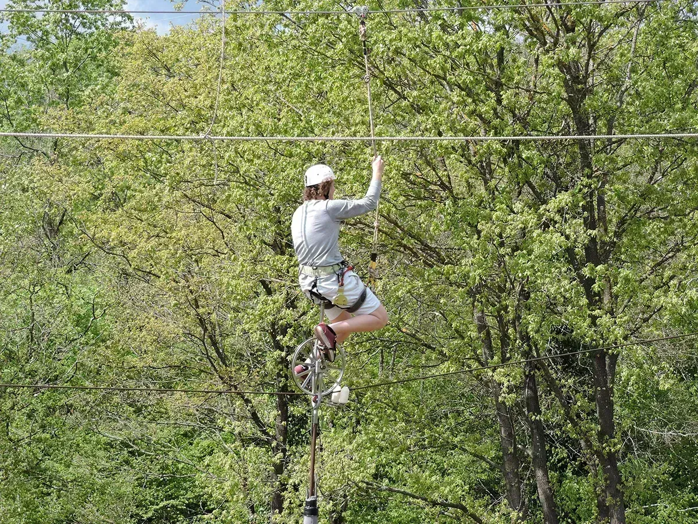
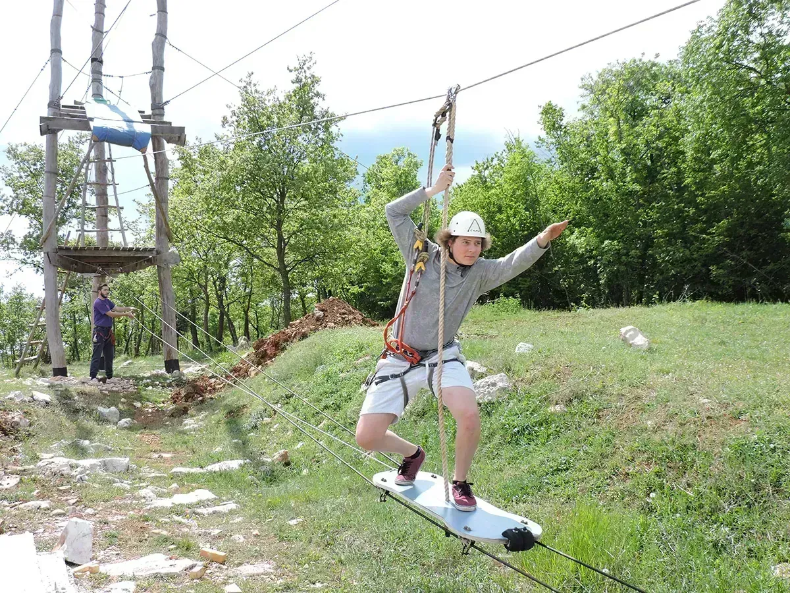
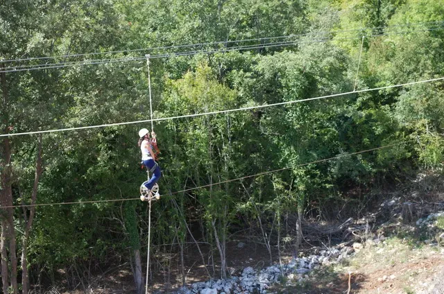
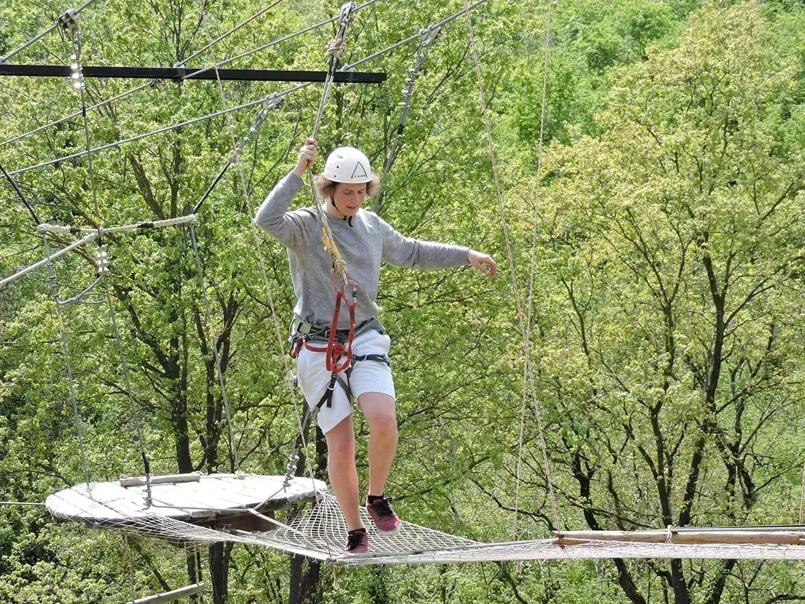
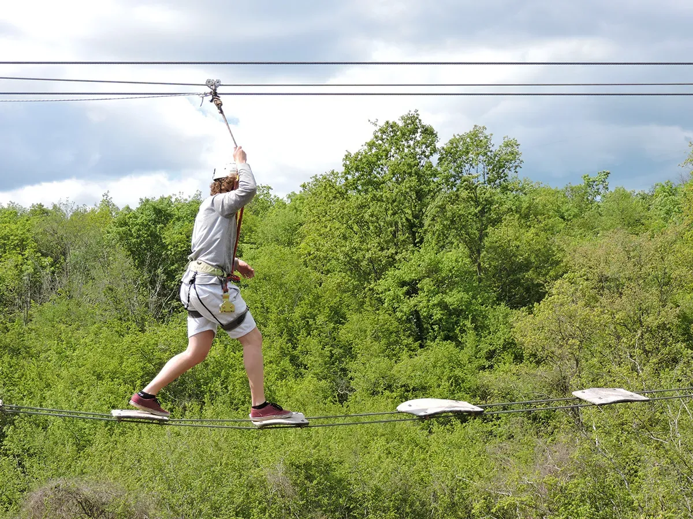
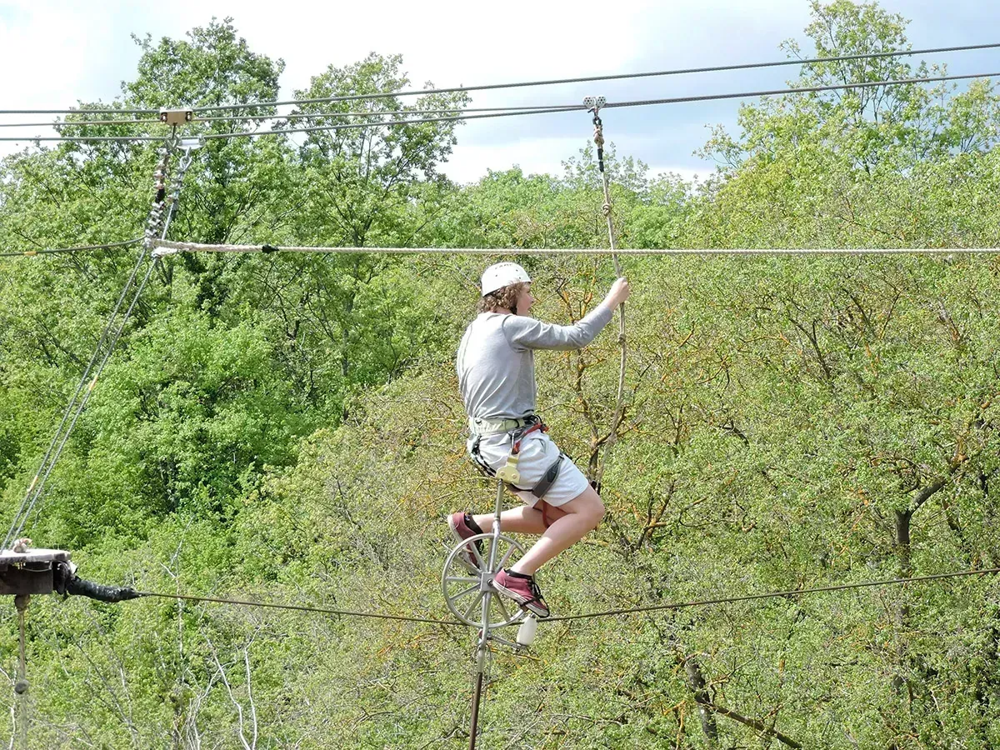
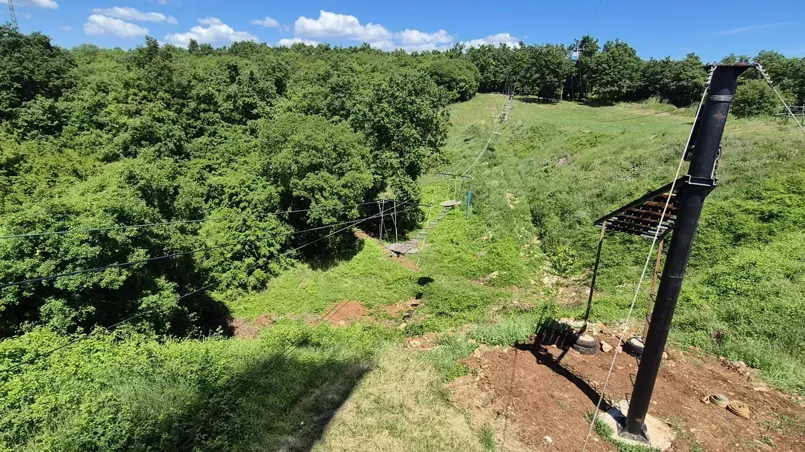

Staza Vražjeg puta
Kada ste prošli žutu i plavu stazu — ili ako ste već iskusni u našem avanturističkom parku — vrijeme je da krenete na Stazu Vražjeg puta i pređete je na monociklu. Prvo vozite skateboard, zatim prelazite drveni most prije monocikla — najtežeg dijela parka.
Ako težite više od 85 kg ili niste dovoljno visoki da dosegnete pedale monocikla, ova igra možda nije prikladna; možete umjesto toga hodati po žici. Osoblje vas vodi kroz namještanje sjedala, ravnotežu i vožnju — jednom rukom držite sigurnosnu užad, drugom sjedalo. Nakon monocikla prijeđite slackline i jednostavan japanski most. Visoka ljuljačka je najbolja sljedeća atrakcija.
Fotografije i video posjetitelja — Staza Vražjeg puta







Najzahtjevniji izazov parka — monocikl, slackline i japanski most
Staza Vražjeg puta završnica je crne staze — skateboard, drveni most, prijelaz monociklom, slackline i japanski most. Nagrađuje posjetitelje koji su stekli samopouzdanje na žutoj i plavoj stazi.
Monocikl i ograničenja
Dio s monociklom jedinstven je u Hrvatskoj. Na most s monociklom vrijedi limit 85 kg; mala djeca moraju dohvatiti pedale. Osoblje može predložiti alternative. Ostavite dodatno vrijeme — mnogi gosti zastanu gledati druge.
Sljedeći koraci
Nakon crne staze mnogi idu na dolinski zipline ili adrenalin katapultu. Više o sigurnosti.
Planiranje posjeta
Glavani Park se nalazi u Glavanima 10, Barban — otprilike 30 minuta vožnje od Pule, 45 minuta od Rovinja i Rabca te 50 minuta od Poreča. Besplatno parkiranje je na licu mjesta. Park radi svaki dan 9–17 h; posljednji ulaz u 15 h, stoga planirajte tri do četiri sata za cijeli park.
Za staza vražjeg puta i ostale atrakcije možete rezervirati online za grupe do 10 osoba ili nazvati za veće grupe. Pogledajte pakete i cijene — cijeli park s katapultom €60–70 (djeca/odrasli), cijeli park bez katapulata €40–50, trening ruta + 2 igre €20–30, obiteljski paketi od €150.
Sigurnost i oprema
Svaka aktivnost u Glavani Parku vodi se pod nadzorom kvalificiranih instruktora. Oprema je CE certificirana i provjerava se dnevno. Prije početka dobivate harnes, kacigu i jasnu obuku. Više o standardima pročitajte na našoj stranici o sigurnosti.
Paketi od €20 djeca / €30 odrasli · online do 10 osoba